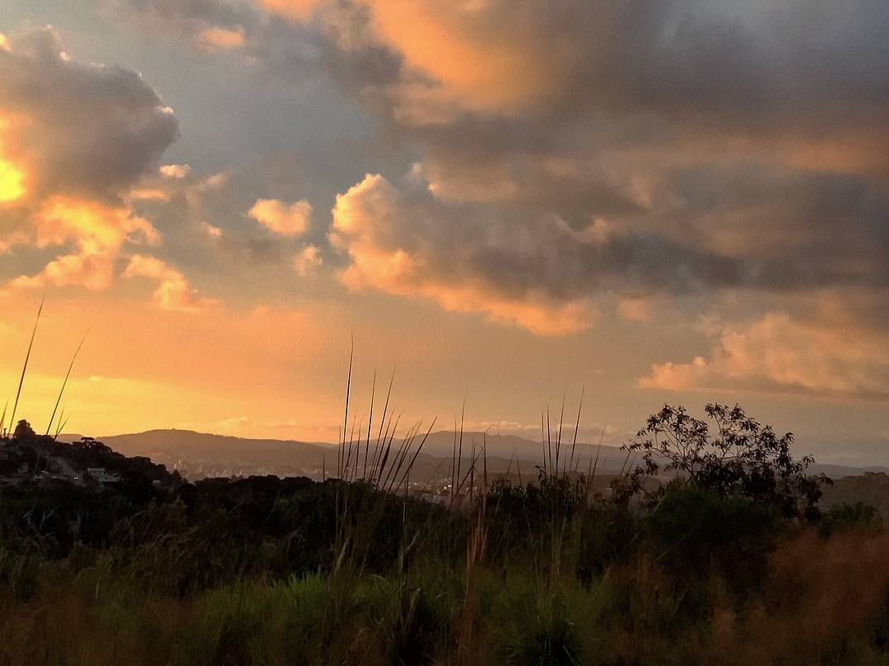

Bem-vindo a vida nada interessante de Larissa Schmidt
Como tudo deve ser
Como diz o titulo, me chamo Larissa Schmidt, para os mais chegados Lari e para os estranhos uma pessoa com as demais. Como qualquer outro ser humano do tipo sanguineo A+, tenho interesse sobre a vida, felicidade e como se ganhar dinheiro sem precisar vender sua alma. Particularmente falando sobre o facínio de se alto avaliar e mesmo assim mascarar os defeitos, tenho uma dezenas deles e a carapuça é exatamente do meu tamanho, mas sobre as qualidades tento ver a vida como ela é cômica, não me entenda mal,mas enquanto uns choram outros riem e ta tudo certo, nos humanos somos programados a ignorar, pois de outra forma seria insustentavél. Para falar sobre mim, tive que perder muitas unhas nas rochas em que escalei para chegar até aqui, no momento estavél e confortavél em que me encontro sinto que posso ter chegado ao topo, mas eu sei que somente achei uma lacuna entre as rochas, quando olho para cima vejo um prefácio da proxíma escalada que me aguarda. Por enquanto respiro fundo e curto a vista, tomo folego para a jornada a seguir, mas posso te falar eu sempre gostei de tirar onda de alpinista.
Lugar ao sol
Gosto de nos momentos livres, aproveitar a companhia das pessoas que eu amo. No verão almoçar no domingo e depois ir todo mundo tomar banho de cachoeira, tomar sorvete na volta, ver um filme e dormir enquanto ele passa. Já na primavera, ir ao jardim botanico, visita sagrada uma vez por ano. No inverno tomar chimarrão, apreciar um bom vinho e comer pinhão esquentando o pé no fogão alenha.